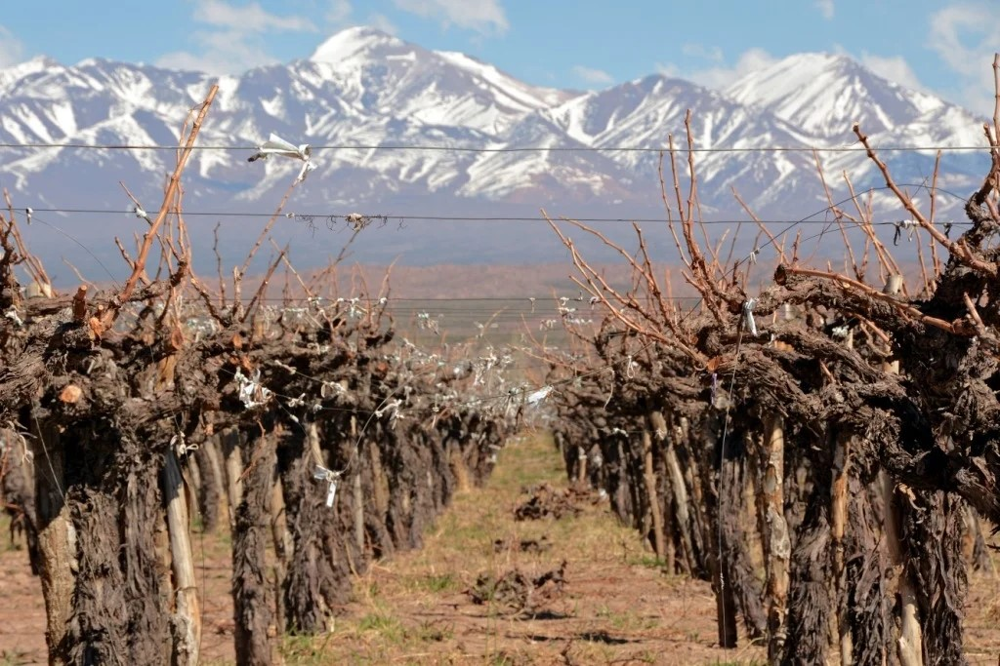
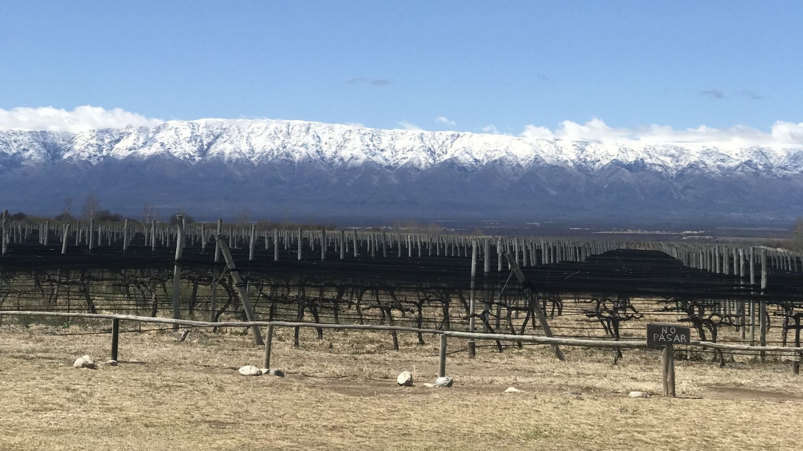
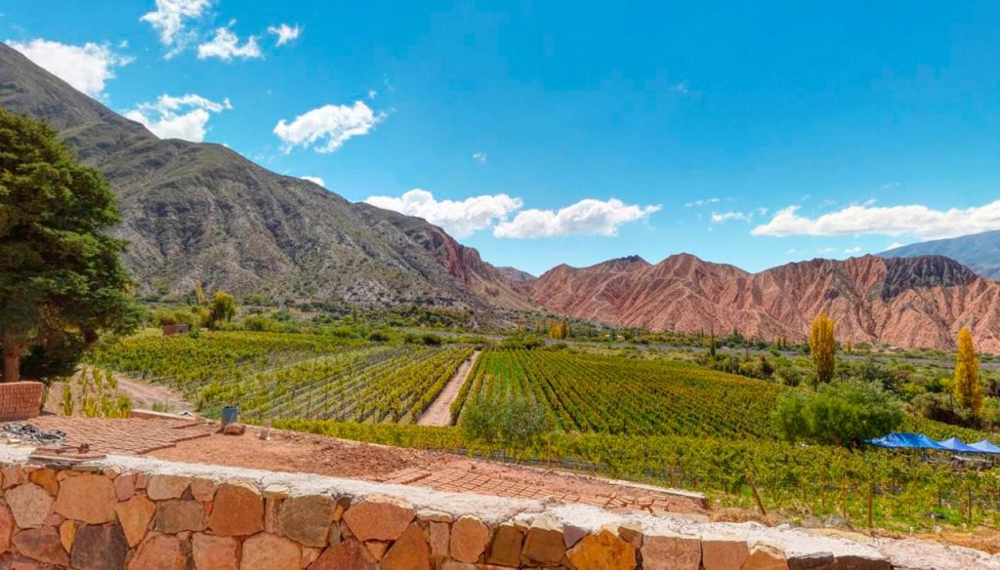
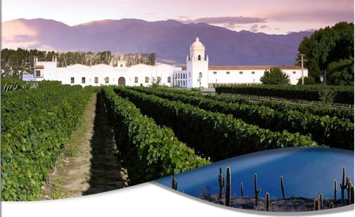
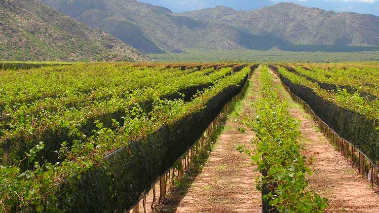
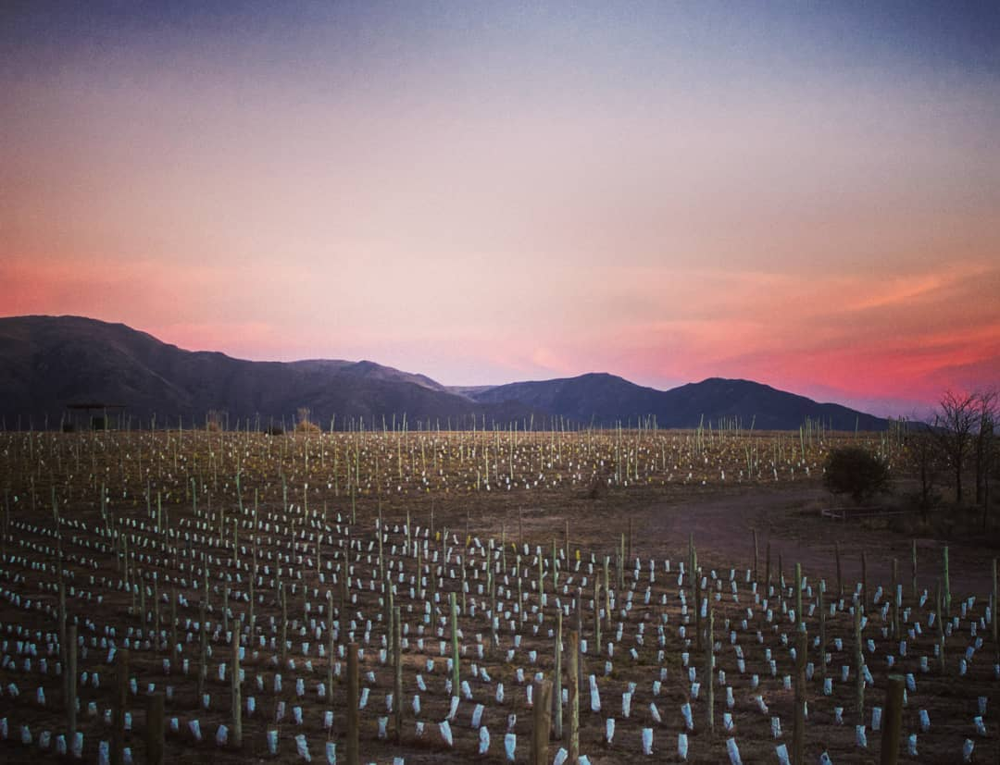
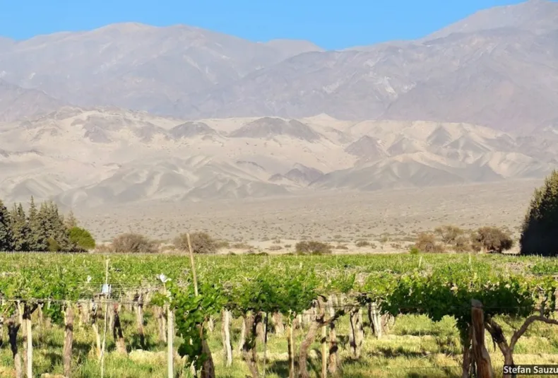
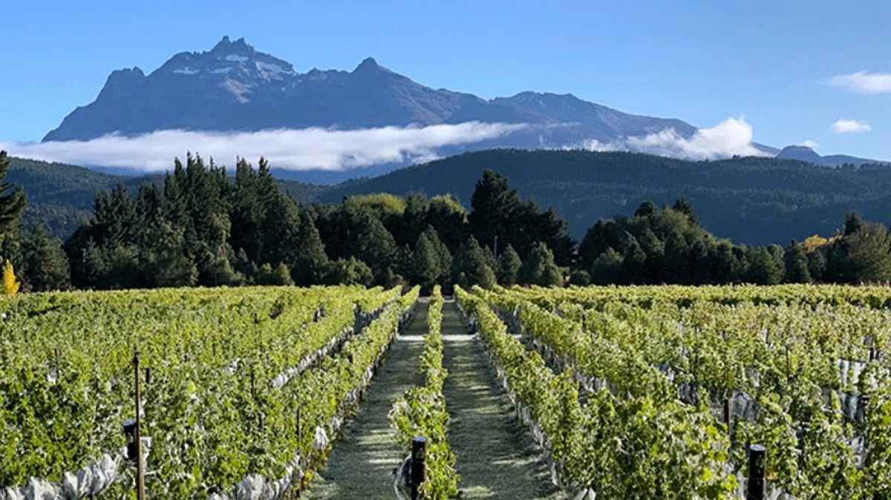

Estas son algunas de las provincias de Argentina y sus características
que cultivan los mejores vinos exportados al mundo

Mendoza
Mendoza es la principal región vinícola de Argentina, situada al pie de la cordillera de los Andes.
Su clima seco, con inviernos fríos y veranos cálidos, junto con su altitud elevada,
proporciona condiciones ideales para el cultivo de uvas de alta calidad.
La región es famosa por su producción de Malbec.
La provincia de Mendoza es ideal para el cultivo de vino debido a su clima seco y soleado,
suelos aluviales y buena disponibilidad de agua de riego proveniente de los Andes.
Estas condiciones permiten el desarrollo de uvas con gran concentración de sabores,
haciendo que los vinos de Mendoza sean muy valorados internacionalmente.
Mendoza exporta aproximadamente el 70% del vino argentino, con principales mercados en Estados Unidos,
Reino Unido y Brasil. La provincia cuenta con más de 1,200 bodegas, produciendo alrededor de 12 millones de
hectolitros de vino anualmente. La calidad y diversidad de sus vinos han posicionado a Mendoza como un
referente mundial en la industria vitivinícola.

San Juan
San Juan es una importante provincia vitivinícola de Argentina,
ubicada en la región de Cuyo. Su clima árido y suelos aluviales son ideales para el cultivo de uvas,
especialmente para la producción de vinos tintos y rosados. La región se destaca por su calidad enológica.
El clima seco y soleado de San Juan, junto con su altitud, proporciona condiciones excelentes para la viticultura.
Esto permite la producción de vinos con gran intensidad de color y sabor. Los vinos de San Juan
son conocidos por su estructura y carácter distintivo, atrayendo a muchos enófilos.
San Juan exporta una cantidad significativa de su producción vinícola a mercados internacionales,
incluyendo Estados Unidos y Europa, destacándose por su alta calidad y competitividad.
La provincia cuenta con numerosas bodegas que producen vinos reconocidos mundialmente.
Su industria vitivinícola sigue creciendo con fuerza.

San Luis
San Luis, ubicada en el corazón de Argentina, está emergiendo como una región
vitivinícola con gran potencial. Sus viñedos se benefician de un clima seco y
soleado, ideal para la producción de vinos de calidad. La región está ganando reconocimiento
por sus innovadores métodos enológicos.
La elección de San Luis para la viticultura se debe a su clima favorable y la pureza de su agua,
lo que permite el cultivo de uvas con características distintivas. Estas condiciones favorecen
la producción de vinos con sabores complejos y bien equilibrados, atrayendo a conocedores del vino.
San Luis está comenzando a exportar sus vinos, con mercados en crecimiento en Estados Unidos y Europa,
donde se valora su frescura y autenticidad. La región está estableciendo su marca en la industria vitivinícola,
ofreciendo vinos de alta calidad que reflejan su terroir único.

Jujuy
Jujuy es una provincia del noroeste argentino con una creciente industria vitivinícola.
Su altitud elevada y clima seco crean condiciones únicas para el cultivo de uvas de alta calidad.
Los vinos de Jujuy están comenzando a ganar reconocimiento internacional por su singularidad y carácter distintivo.
La altitud de Jujuy, combinada con su clima, permite el desarrollo de uvas con una gran concentración
de azúcares y sabores, haciendo que sus vinos sean únicos. La región ofrece un entorno ideal para
la producción de vinos con gran cuerpo y complejidad aromática, destacándose en el mercado.
Jujuy está empezando a exportar sus vinos, especialmente a mercados de América del Norte y Europa,
donde se aprecian sus características únicas. La industria vitivinícola de Jujuy está en expansión,
ofreciendo vinos que reflejan la identidad y diversidad de la región. Su futuro enológico es prometedor.

Salta
Salta, en el noroeste de Argentina, es conocida por sus vinos de altura. Sus viñedos, situados a gran altitud
, producen uvas con sabores intensos y únicos. Los vinos de Salta, especialmente los Malbec y Torrontés,
son muy apreciados por su calidad y personalidad distintiva.
El clima de altura de Salta, con días soleados y noches frescas, permite el desarrollo de uvas con
gran acidez y concentración de sabor, perfectas para vinos de alta calidad. Estas condiciones
favorecen la producción de vinos con perfiles aromáticos únicos y equilibrados, reconocidos mundialmente.
Salta exporta una porción significativa de sus vinos a mercados internacionales, incluyendo
Estados Unidos y Europa, destacándose por sus vinos Malbec y Torrontés. La región cuenta con
bodegas prestigiosas que han consolidado su reputación en la industria vitivinícola global,
ofreciendo productos excepcionales.

La Rioja
La Rioja es una provincia vitivinícola histórica en Argentina, conocida por sus vinos blancos y tintos.
Sus viñedos se encuentran en un clima árido con suelos ricos en minerales. La región es especialmente
famosa por su variedad Torrontés, que produce vinos aromáticos y frescos.
La combinación de clima seco y suelos minerales de La Rioja permite la producción de vinos con gran personalidad
y estructura, especialmente variedades como Torrontés y Malbec. Estas características hacen que los vinos
de La Rioja sean muy valorados por los conocedores del vino.
La Rioja exporta vinos a varios mercados internacionales, con una fuerte presencia en Estados Unidos
y Europa, donde sus vinos son reconocidos por su calidad y singularidad. La región sigue desarrollando
su industria vitivinícola, ofreciendo vinos que reflejan su rica herencia y tradición.

Córdoba
Córdoba, situada en el centro de Argentina, está desarrollando una reputación en la producción de vinos artesanales.
Su clima templado y suelos variados ofrecen condiciones ideales para la viticultura.
La región se destaca por sus vinos innovadores y de alta calidad, producidos en pequeñas bodegas.
El clima templado de Córdoba, junto con sus suelos variados, permite la producción de una
amplia gama de vinos con características distintivas y sabores únicos. Estos factores hacen
que los vinos de Córdoba sean apreciados por su diversidad y calidad, atrayendo a enófilos exigentes.
Córdoba está empezando a exportar sus vinos, especialmente a mercados nicho en América del
Norte y Europa, donde se valoran sus vinos artesanales y de pequeña producción. La región
está ganando reconocimiento internacional por su enfoque en la calidad y autenticidad de sus productos vinícolas.

Catamarca
Catamarca, en el noroeste argentino, es una región vitivinícola en crecimiento.
Sus viñedos se benefician de un clima seco y suelos fértiles, ideales para la
producción de uvas de alta calidad. Catamarca está ganando reconocimiento por sus
vinos robustos y expresivos.
El clima seco y soleado de Catamarca, junto con la altitud de sus viñedos, permite
el cultivo de uvas con gran concentración de sabores. Esto resulta en vinos con estructura y carácter,
ideales para los amantes del vino que buscan nuevas experiencias enológicas.
Catamarca está comenzando a exportar sus vinos, con mercados emergentes en América del Norte y Europa,
donde sus vinos son apreciados por su autenticidad y calidad. La región está estableciendo su posición
en la industria vitivinícola, ofreciendo vinos que reflejan su terroir único.

La Patagonia
La Patagonia argentina es famosa por sus vinos de clima frío y suelos volcánicos.
Los viñedos en esta región extensa producen uvas con sabores únicos y marcada frescura.
Los vinos patagónicos, como Pinot Noir y Malbec, destacan por su elegancia y complejidad.
El clima fresco de La Patagonia, influenciado por el océano Atlántico, contribuye a vinos con
acidez equilibrada y notas frutales intensas.
Esto hace que los vinos de la región sean apreciados por su estilo sofisticado y terroir distintivo.
La Patagonia exporta sus vinos a mercados selectos en Estados Unidos y Europa, donde se valoran sus etiquetas
boutique y producción limitada. La región está ganando reconocimiento global por sus
vinos de alta calidad y carácter único.
Con su vasta extensión y variedad de microclimas, La Patagonia ofrece un escenario diverso para la
viticultura, promoviendo la experimentación con variedades como Merlot y Sauvignon Blanc.
Esto fortalece su posición como una de las regiones emergentes en la industria vitivinícola mundial,
atrayendo a enólogos y amantes del vino en busca de nuevas experiencias.